Alex a livré la table, la chaise, l'horloge, la bougie, les chaînes et les objets des pouvoirs. Tout ce que tu vois est rendu depuis son fichier dans la vraie scène du jeu, avec les lumières du jeu. Les cartes et le liège viennent d'une capture de partie, prise avec la même caméra.
Référence. Buckshot Roulette : des objets posés à des places fixes sur la table, autour du fusil, qu'on prend en cliquant. Inscryption : les objets à usage unique posés sur la table à côté du joueur, trois au plus. Vus par des articles, pas joués.
Aujourd'hui. Tous les pouvoirs sont le même bouton rouge, posé sur une bande noire au bas de la table. Le jeu a déjà un champ par pouvoir pour son objet 3D, resté vide. Table sans détail, pas de chaise, pas d'horloge, bougie et chaînes générées par le code.
La scène. Partie à 8, deuxième nuit. La Dryade s'éveille et cherche son pouvoir. Puis le jour, le cercle des chats au moment du vote.
Sans question. Robot et Luma gardent le bouton rouge jusqu'à leur livraison. Les objets gardent le survol et le clic d'aujourd'hui, et la bave des pouvoirs copiés. Les animations de pouvoirs du suivi d'Alex ne sont pas livrées. Une nouvelle version de son fichier se réimporte en une commande : ses retouches à venir ne coûtent rien.
Manque chez Alex. Leaves.jpg et LeafB2.jpg, les feuilles du cœur, pas sur le Drive : le
cœur est ici en or uni, provisoire. L'objet du Robot, celui de Luma.
Le suivi d'Alex liste les pouvoirs sans dire quel objet va où. Si Wouh a une autre idée, une remarque suffit, ça se change en une ligne.
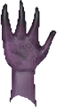
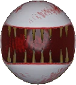
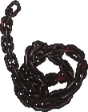
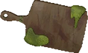
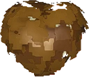
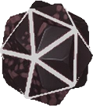
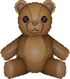
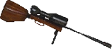
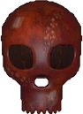
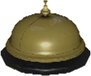
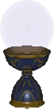
Tout comme M1, sauf ces deux lignes : la boule reste à l'Oracle.
Mêmes dimensions que la table actuelle : les cartes, le liège et la caméra ne bougent pas.
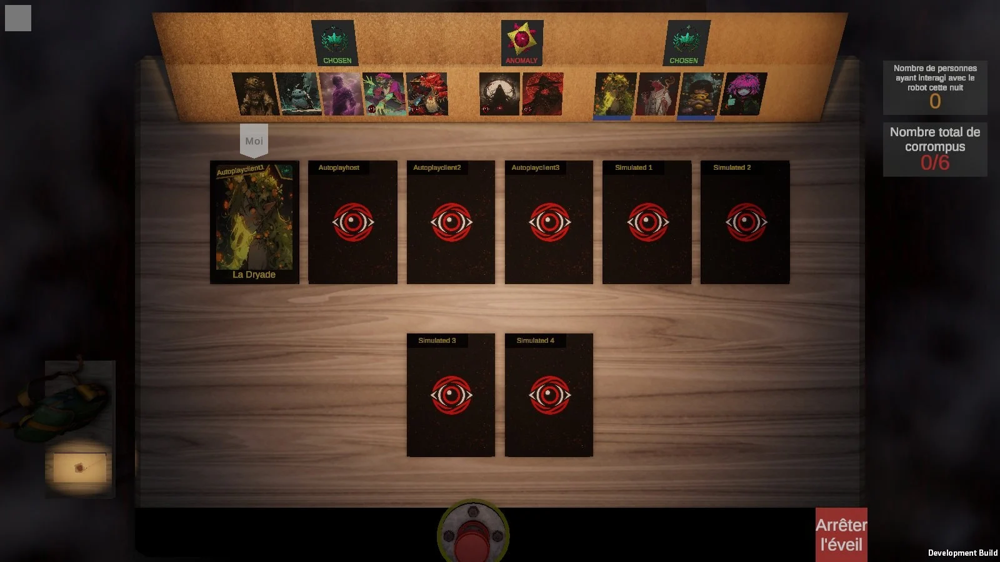
Sa texture telle quelle, taches de lumière peintes comprises : elles restent visibles entre les cartes.
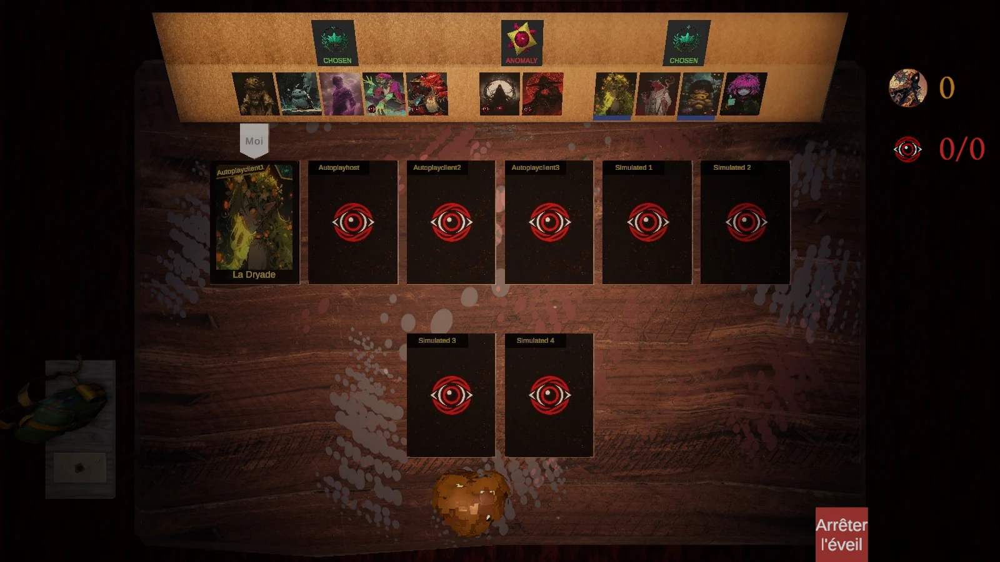
La vue de nuit est au-dessus du centre de la table : un objet posé au bord de l'écran y est vu de biais et coupé. Chaque objet est donc penché vers la caméra pour se lire de face.
Place actuelle, rien ne bouge. Un objet plus haut que le bouton sort de l'écran : le cœur est coupé.
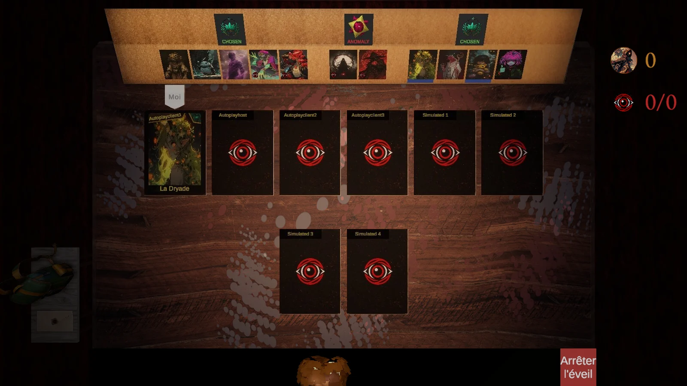
La bande disparaît, la rangée remonte juste sous les cartes. Ici les deux objets du Mage : déplace-les si tu les veux ailleurs. À cette place elle ne touche aucune carte : la dernière rangée s'arrête au même endroit de 7 à 14 joueurs.
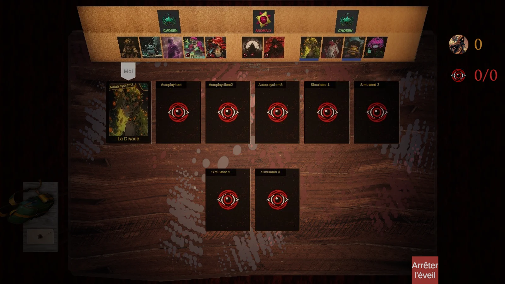
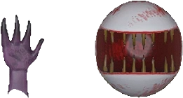
Le jour, vue assise, rangées de cartes fermées : au repos à gauche, tête tournée à droite. La nuit elles sont hors champ.
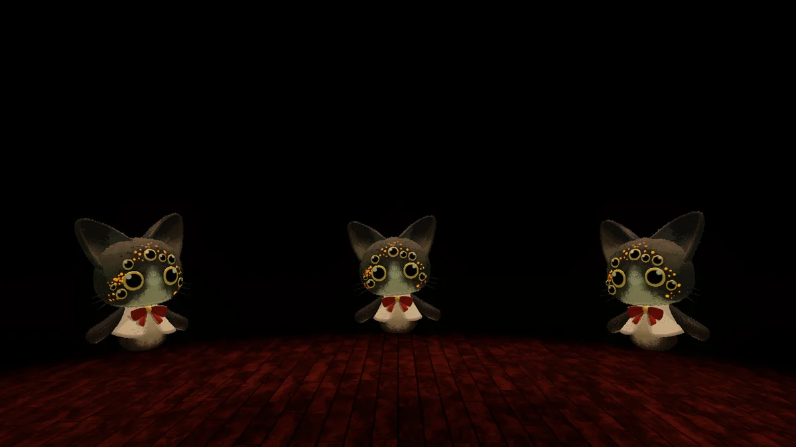
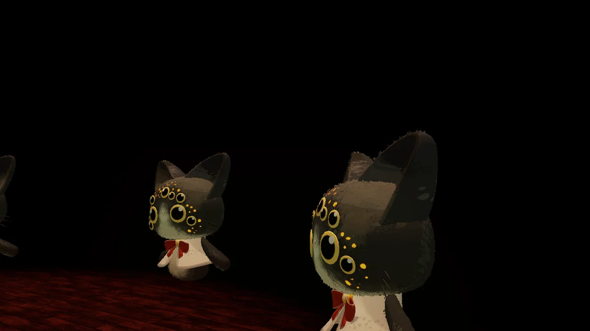
Le chat reste au sol, comme aujourd'hui, le dossier s'élève derrière lui. Aucun réglage de vue ne change.
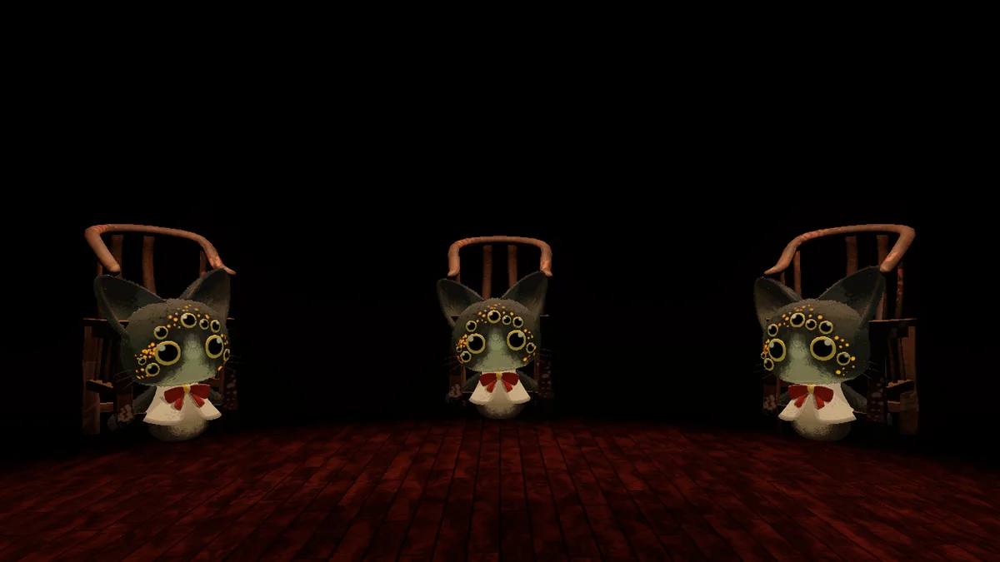
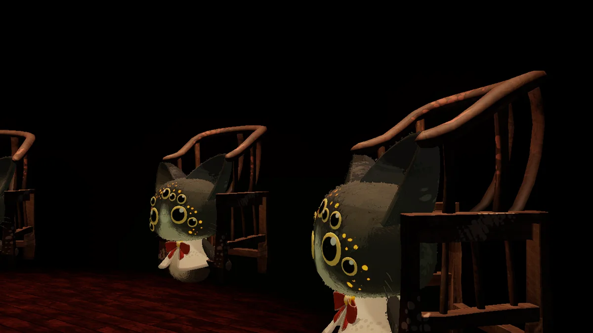
Le dossier dépasse à peine des oreilles : le chat reste le sujet.
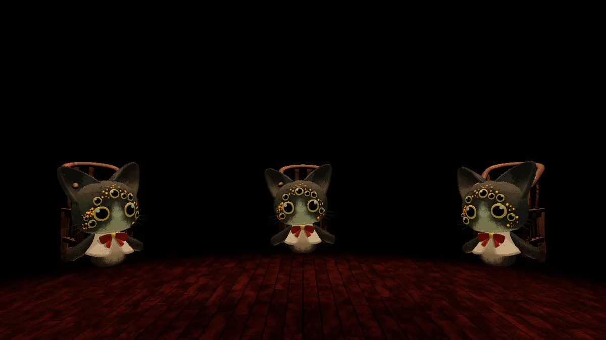
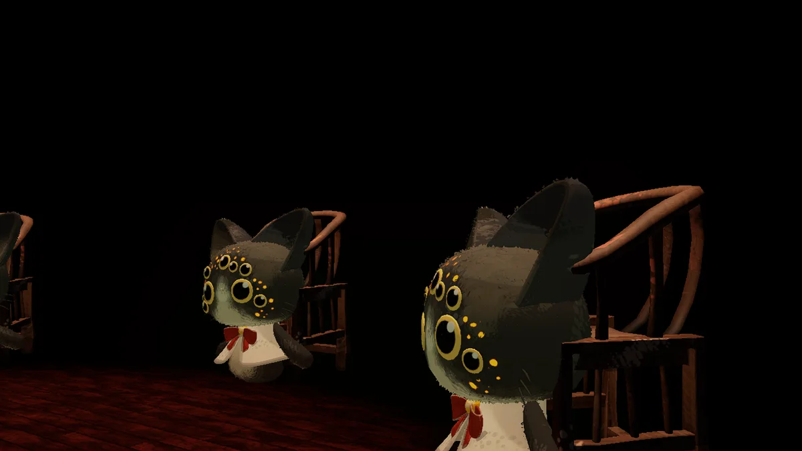
Le sol descend de 10 m sous les chats. Le plus juste, mais à revérifier partout où le sol se voit (emotes, enchaînement, bougie du jour) : c'est le choix le plus long à coder.
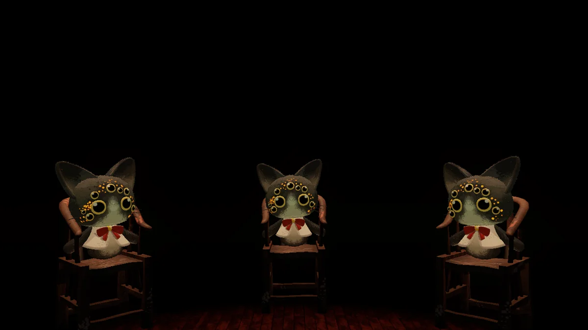
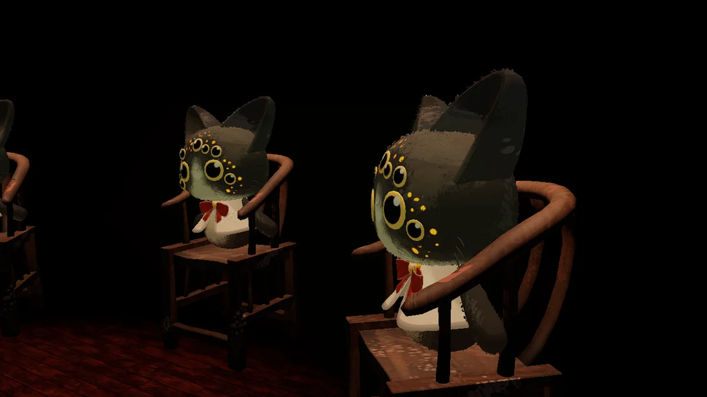
Le suivi d'Alex la range dans le décor sans dire à quoi elle sert. Le jeu a déjà un tic-tac sans horloge visible pendant le vote, et un temps limité à l'éveil.
La grande aiguille fait un tour pendant ton temps d'éveil. Le jour la table part, et l'horloge avec. Déplace-la où tu la veux.
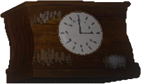
Elle rejoint la bougie devant toi, ses aiguilles suivent le vote et donnent un visage au tic-tac. La nuit, rien sur la table.
Celle d'aujourd'hui fond, repousse et éclaire. Celle d'Alex est un modèle figé.
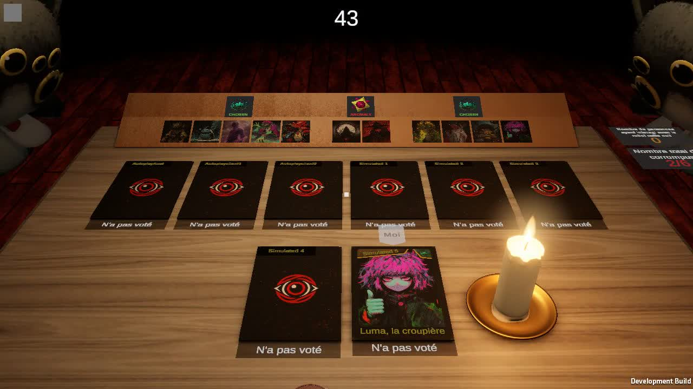
Son plateau et son pied, posés sous la cire, la flamme et la fumée d'aujourd'hui. Sa cire à lui n'apparaît pas : l'image montre le bougeoir.
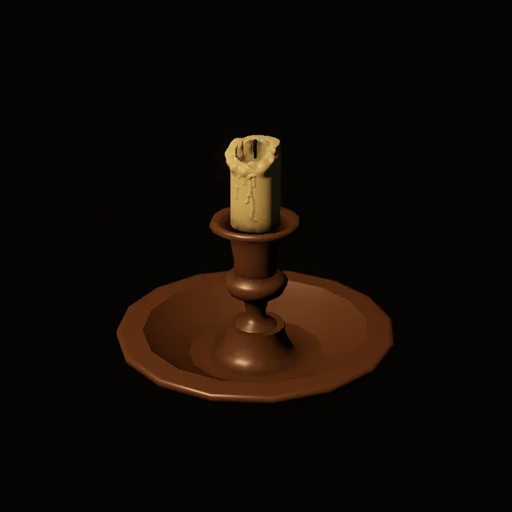
Son modèle entier avec notre flamme. Il ne fond plus : le vote perd la fonte que tu avais choisie (T19).
Aujourd'hui, maillons générés par le code, en fer clair (ton choix M2 de T19). Alex livre un maillon rouillé et un tas.
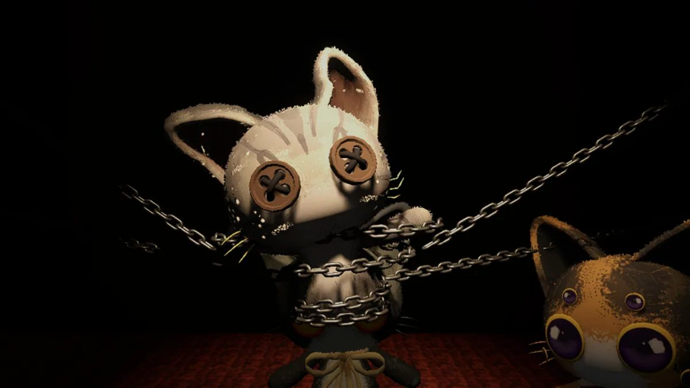
Même enroulement sur les bras et le corps, avec son maillon et sa texture. Plus sombres sur le chat que le fer clair.
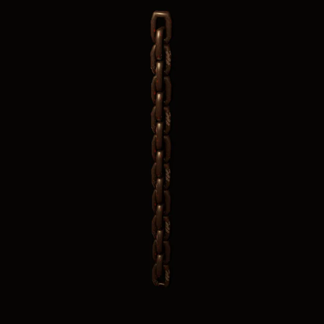